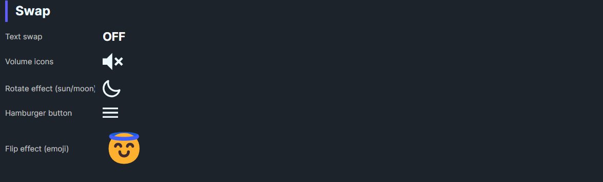

DaisySwap is a toggle that swaps between OnContent, OffContent, and optional IndeterminateContent. It supports transition effects (none, rotate, flip) to animate the content change. Use it for icon toggles, play/pause, theme switches, or stateful actions.
| Property | Description |
|---|---|
OnContent |
Content shown when IsChecked=True. |
OffContent |
Content shown when IsChecked=False. |
IndeterminateContent |
Content for indeterminate state when IsChecked=null. |
TransitionEffect |
None, Rotate, or Flip animation between states. |
<!-- Simple icon swap -->
<controls:DaisySwap TransitionEffect="Rotate" IsChecked="True">
<controls:DaisySwap.OnContent>
<PathIcon Data="{StaticResource DaisyIconSun}" />
</controls:DaisySwap.OnContent>
<controls:DaisySwap.OffContent>
<PathIcon Data="{StaticResource DaisyIconMoon}" />
</controls:DaisySwap.OffContent>
</controls:DaisySwap>
<!-- Text swap with indeterminate -->
<controls:DaisySwap TransitionEffect="Flip" IsThreeState="True" IsChecked="{Binding IsMaybe}">
<controls:DaisySwap.OnContent>
<TextBlock Text="On" />
</controls:DaisySwap.OnContent>
<controls:DaisySwap.OffContent>
<TextBlock Text="Off" />
</controls:DaisySwap.OffContent>
<controls:DaisySwap.IndeterminateContent>
<TextBlock Text="?" />
</controls:DaisySwap.IndeterminateContent>
</controls:DaisySwap>IsThreeState="True" to enable the indeterminate content path.Rotate/Flip for playful state changes; None for instant swaps.IsChecked for state management; the control inherits ToggleButton behavior.